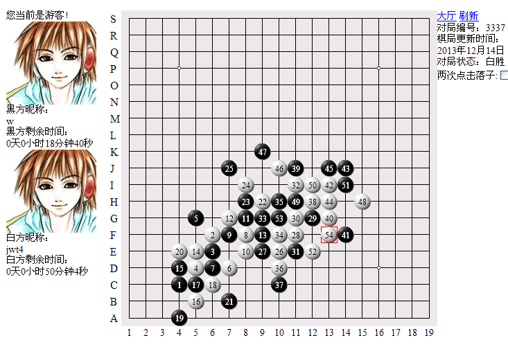
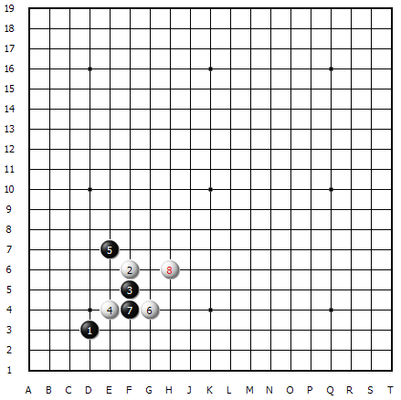
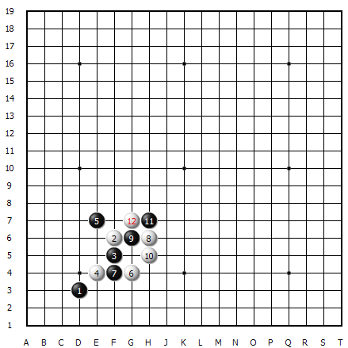
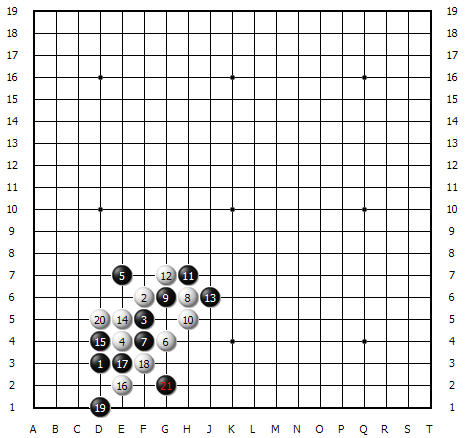
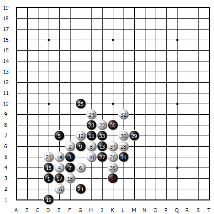
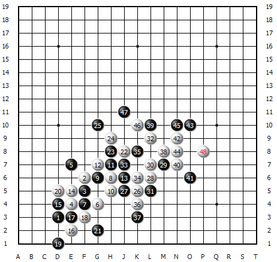
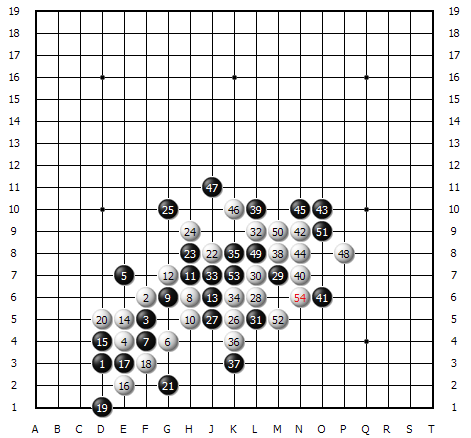

【暑假杯】强中自有强中手 棋输棋赢转头空——螳螂捕蝉黄雀在后
#1 【暑假杯】强中自有强中手 棋输棋赢转头空——螳螂捕蝉黄雀在后 作者：蓝天蓝 发表时间：2014-5-25 21:07:16
强中自有强中手 棋输棋赢转头空——螳螂捕蝉黄雀在后
作者：jwt4
【讲五堂】jwt4 vs【悠哉阁】 w 对战解说
http://game.freewzq.com/offlineDisplayGame.html?html=1486728&id=3337

这是第十三轮的比赛，讲五堂四台VS悠哉阁四台，讲五堂执白胜出。

这是一场冠亚军决赛。
也是这次家族争霸赛的最后一轮比赛。
对于这场比赛，我们讲五堂家族做好了充分的应战准备。
家族族长做为我们团队坚强的后盾，给予了我们强大的取胜信心。
熟悉一手的人都喜欢拿黑棋。比赛更是如此。但这盘比赛我四台是执白。但这并不影响我们取得胜利的信心。反而更增加了我们战胜对手的决心。前3手，很常见。第4手换了新面孔。与强手对决必须要有创新。否则很难冲出来。
第8手很厉害，没有一定的水平是不敢走这个8的。

通过上面几手棋，可以看出我白棋的棋力是相当强的，能攻能收，收放自如。10手后估计黑要走在8和10的上面，所以12手自然的形成二个活二。棋面白棋共有三个活二，而黑棋只有一个眠三。

14手活三，是希望对家的15手防上面。白棋可以在下面有所作为，但黑棋也厉害，可能是察觉到了白棋的意图。所以，他防在下面。接下来是一系列的交换。

交换完了后，白棋转战到棋面的右上，伺机在右上找机会。22手防守住他的冲四。黑棋这时开始很小心了，也许是担心白棋的攻击力太强吧。从23开始，一直跟着白棋跑。跟到32手，黑棋试图活三，但都被白棋给反了回来。35手又不得不防。白36手顺势又一个活三，估计是黑棋跟着跑迷糊了吧，随手防在了下面。如果这手不防错，估计后面不会输的那么快吧。因为37手的失误，造成了黑棋不可挽回的败局。

38手是做棋，做这手棋增加了一个眠三点和一个活二点，再加上原有的一个眠三和一个活二，双眠三和双活二组合在一起。黑棋根本防不住了。
这是比赛中黑39手防守后的胜法。48是胜招。

黑49手防在里面，试图用反四来化解败局，但白棋材料实在太多了，活了一个三就解了围。然后白棋一级连攻胜。
比赛在最后的强强对弈中结束了。
感谢举办方，感谢裁判——没有你们的辛苦运作。就没有这次比赛。
感谢友邻家族的参赛队员们——没有你们厚重肩膀的托举，我们也成不了冠军队。
感谢我所在的家族，感谢我的队友们——和你们在一起并肩作战，使我充分感觉到了集体的温暖与兄妹情谊。
感谢大圣族长为我们这次家族赛取得的成功做出了巨大的贡献——您是我们家族永远的骄傲。
最后，预祝五子棋越来越好，一手交换发展越来越红火！